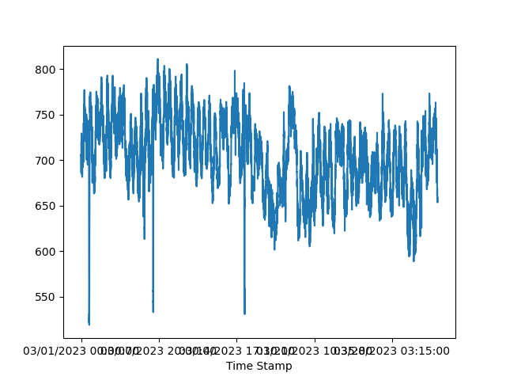

Load Forecasting
Table of Contents
1. NYISO Data
We can pull real-time load data from the following URL. The example URL pulls data for May 2022.
http://mis.nyiso.com/public/csv/pal/20220501pal_csv.zip
Let's create a function that will pull data for a month and process it forecast. It has to:
- Download the file
- Unzip it
- Concatenate the individual DataFrames into one
import urllib.request import zipfile import pandas as pd def get_data(month): # in yyyymm format url = "http://mis.nyiso.com/public/csv/pal/" + str(month) + "01pal_csv.zip" # download the zip file filename, headers = urllib.request.urlretrieve(url) # extract the csv files from the zip with zipfile.ZipFile(filename, "r") as zip_ref: csv_filenames = [f.filename for f in zip_ref.filelist if f.filename.endswith(".csv")] dfs = [] for csv_filename in csv_filenames: # read csv into pandas dataframe with zip_ref.open(csv_filename) as csv_file: df = pd.read_csv(csv_file) dfs.append(df) # concatenate the dataframes into a single dataframe df_concatenated = pd.concat(dfs) df_concatenated.set_index('Time Stamp', drop=True, inplace=True) return(df_concatenated)
mar23 = get_data("202303")
mar23
Time Zone Name PTID Load
Time Stamp
03/01/2023 00:00:00 EST CAPITL 61757 1226.9684
03/01/2023 00:00:00 EST CENTRL 61754 1722.6571
03/01/2023 00:00:00 EST DUNWOD 61760 596.3434
03/01/2023 00:00:00 EST GENESE 61753 1008.5693
03/01/2023 00:00:00 EST HUD VL 61758 1013.8084
... ... ... ... ...
03/31/2023 23:55:00 EDT MHK VL 61756 713.8065
03/31/2023 23:55:00 EDT MILLWD 61759 279.8333
03/31/2023 23:55:00 EDT N.Y.C. 61761 4579.5044
03/31/2023 23:55:00 EDT NORTH 61755 658.6137
03/31/2023 23:55:00 EDT WEST 61752 1477.0037
[100881 rows x 4 columns]
## save the data so we don't have to run every time mar23.to_csv("./mar23.csv")
None
Below are functions to filter by Name and visualize:
def one_location_time_series(df, name): return(df[df['Name'] == name]['Load']) one_location_time_series(mar23, 'NORTH')
Time Stamp
03/01/2023 00:00:00 705.3594
03/01/2023 00:05:00 706.4240
03/01/2023 00:10:00 699.5104
03/01/2023 00:15:00 686.3651
03/01/2023 00:20:00 702.8407
...
03/31/2023 23:42:23 659.7048
03/31/2023 23:43:47 662.0710
03/31/2023 23:45:00 660.0018
03/31/2023 23:50:00 653.6038
03/31/2023 23:55:00 658.6137
Name: Load, Length: 9171, dtype: float64
def elec_plot(df, name): one_location_time_series(df, name).plot.line() plt.savefig('line_plot.png') plt.close()
elec_plot(mar23, 'NORTH')

Figure 1: Load (in MW) Time Series